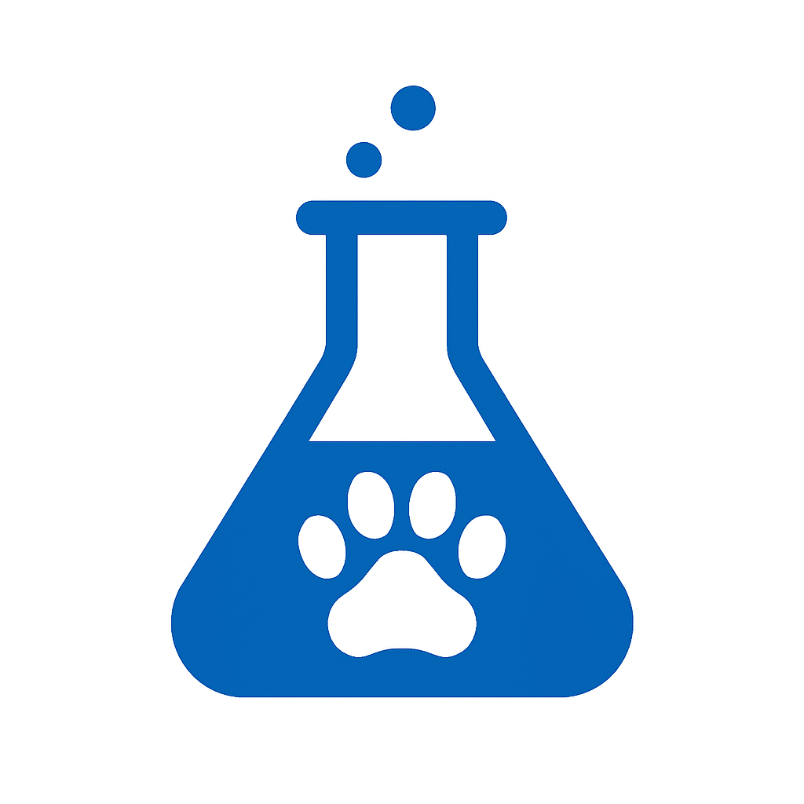
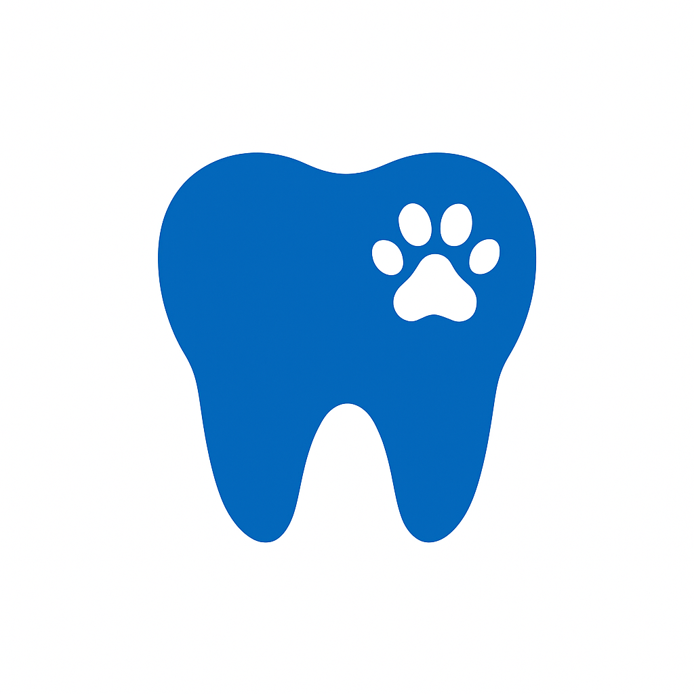
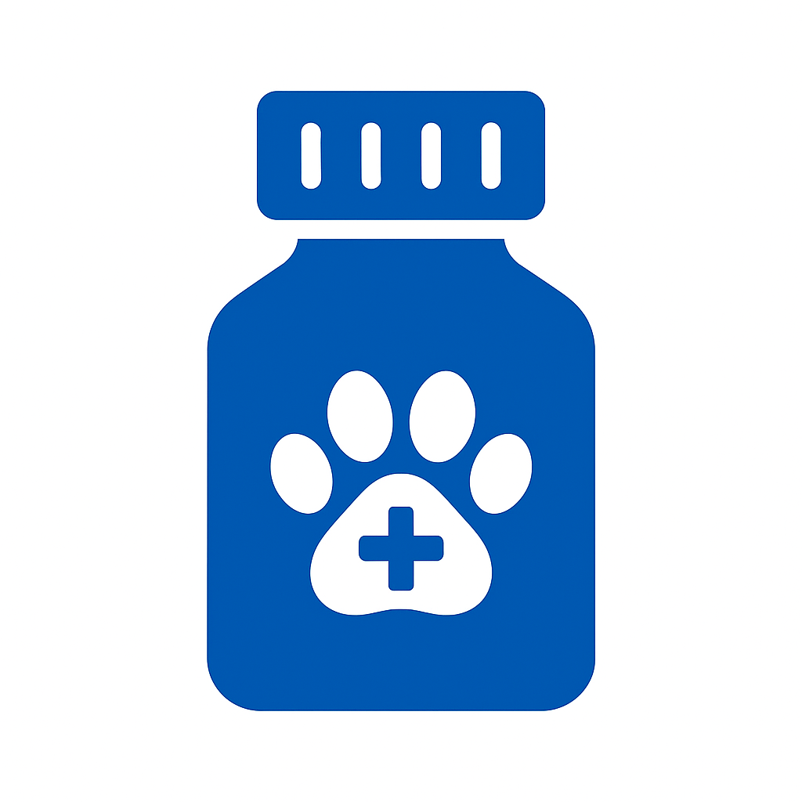
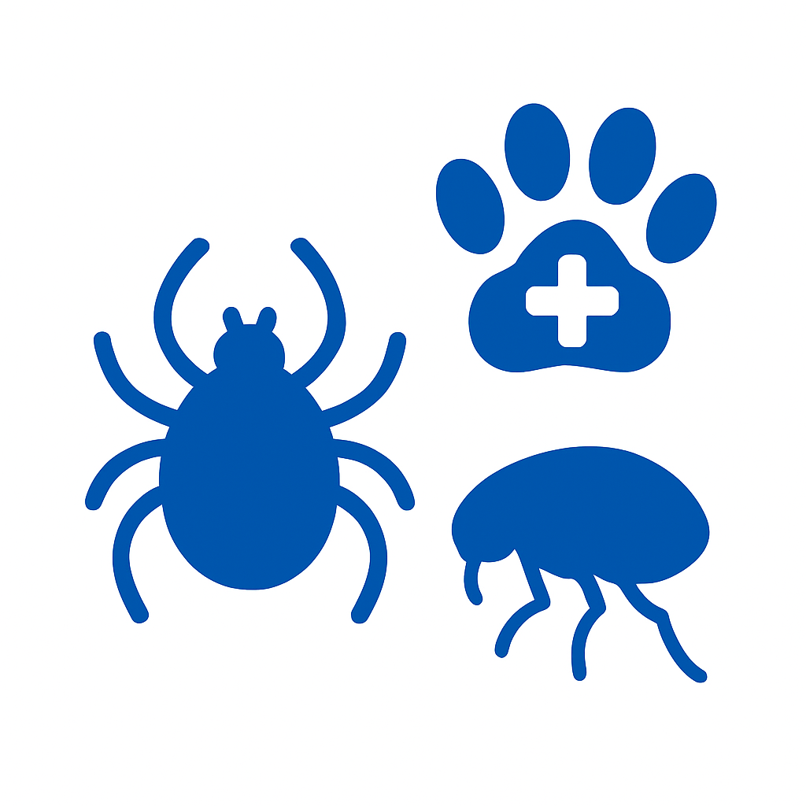
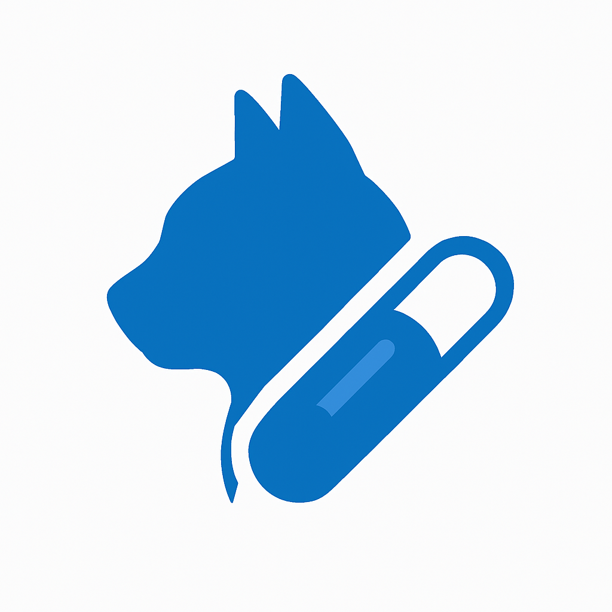
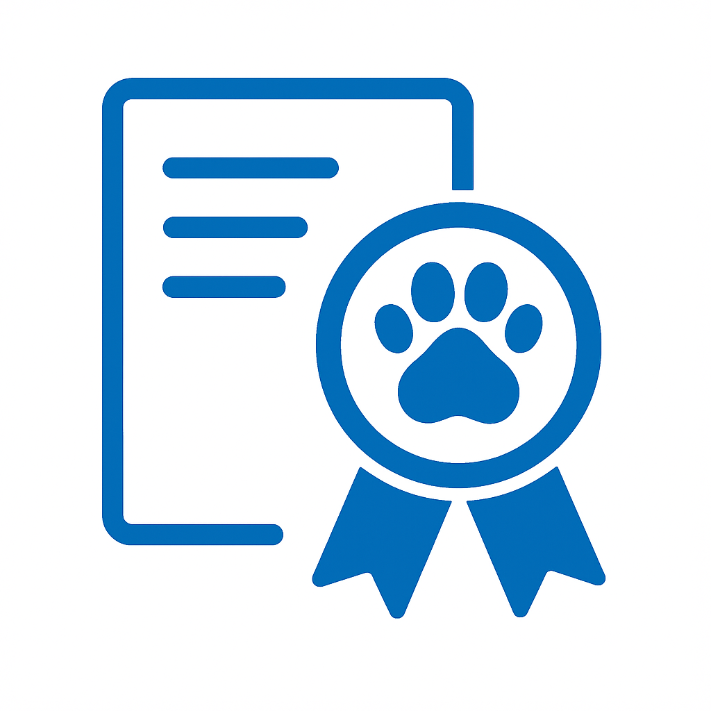

Nuestros Servicios

Consulta Médica
Atención veterinaria integral para el bienestar de tu mascota.
Hospitalización
Cuidados médicos intensivos con monitoreo constante.
Cirugías
Cirugías en ortopedia y tejidos blandos con máxima seguridad.

Laboratorio Clínico
Diagnósticos rápidos y precisos para un mejor tratamiento.
Domicilios
Vamos hasta ti con todo lo necesario.
Petshop
Todo lo que tu mascota necesita en un solo lugar.
Peluquería y Estética
Cuida la apariencia y salud del pelaje de tu mascota.

Profilaxis Dental
Salud oral para una vida más feliz.

Farmacia Veterinaria
Medicamentos y suplementos con asesoría profesional.

Vacunación
Protección efectiva contra enfermedades comunes.

Desparasitación
Eliminación y prevención de parásitos internos y externos.

Microchip
Identificación permanente y segura para tu mascota

Certificados
Documentación oficial para viajes y trámites veterinarios.
Telemedicina
Consulta veterinaria en línea.

Imágenes Diagnósticas
Diagnósticos por imagen de alta precisión..
×